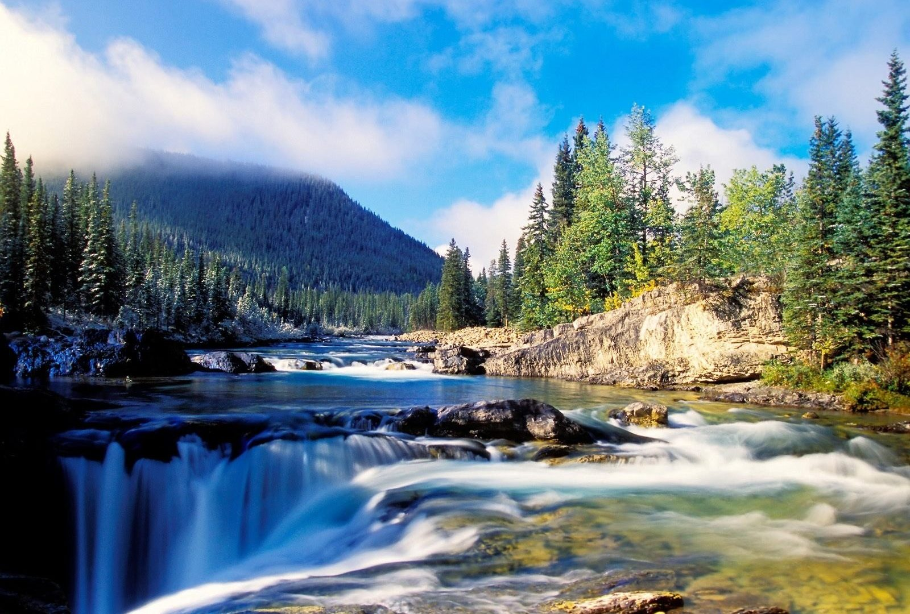
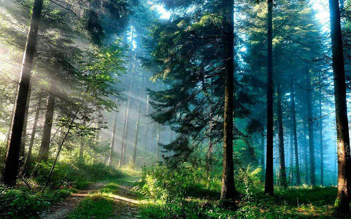

ลำธาร

ลำธาร เป็นทางน้ำธรรมชาติที่มีขนาดใหญ่ เป็นคำศัพท์ทั่วไปที่ในทางวิทยาศาสตร์หมายถึงกระแสน้ำตามธรรมชาติทั้งหลาย รวมทั้งกระแสน้ำขนาดเล็ก เช่น ลำธาร คลอง
ภูเขาหิมะ

ภูเขาหมายถึง ลักษณะภูมิประเทศ ที่มีความสูงตั้งแต่ 600 เมตรขึ้นไปจากพื้นที่บริเวณรอบมีลักษณะคล้ายกับเนินเขา แต่ว่าเนินเขานั้น จะมีพื้นที่สูงจากบริเวณรอบ ๆ ประมาณ 150 แต่ไม่เกิน 600 เมตร
ป่าสีเขียว

ป่าสีเขียว หมายถึง ที่ดินที่ไม่มีบุคคลใดบุคคลหนึ่งได้มาซึ่งกรรมสิทธิ์ครอบครองตามกฎหมายที่ดิน โดยทั่วไป หมายถึง บริเวณที่มีความชุ่มชื้น และปกด้วยใบไม้สีเขียว